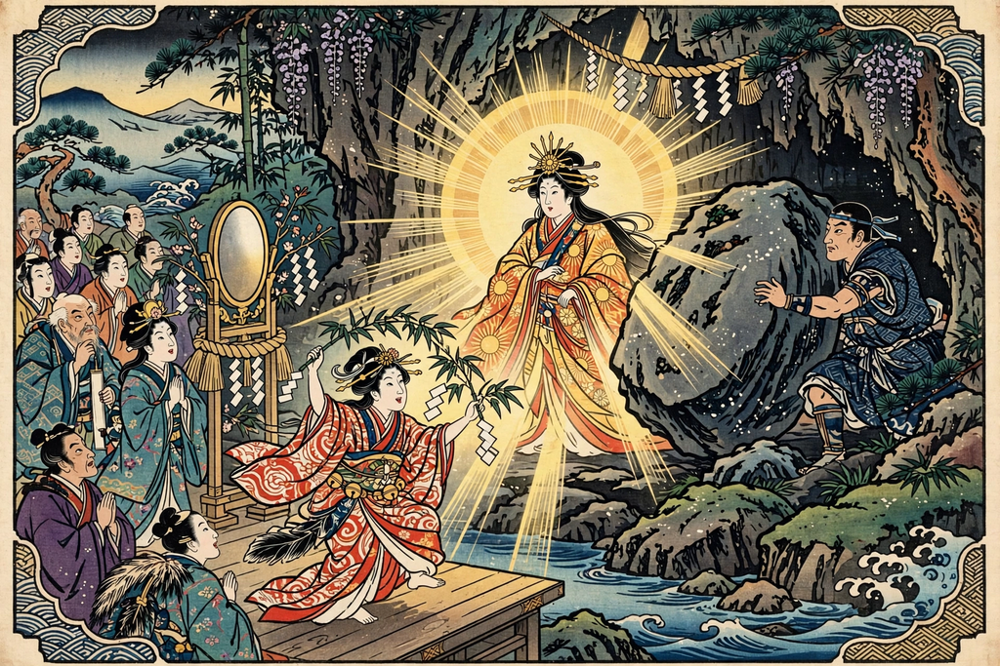

Japanese mythology
From Wikipedia, the free encyclopedia

Japanese mythology is a collection of traditional stories, beliefs and folk religion centred on the Shinto kami (deities and spirits), interwoven with elements of Japanese Buddhism, Taoism and folk practices. Its principal sources are the eighth-century chronicles Kojiki and Nihon Shoki, which recount the creation of the Japanese islands and the divine ancestry of the imperial line.
Creation and the kami
In the beginning, heaven and earth separated and the first deities appeared on the Plain of High Heaven. The brother–sister pair Izanagi and Izanami stood on the Floating Bridge of Heaven and stirred the sea with a jewelled spear, forming the first island. From their union came the islands of Japan and many kami; Izanami died giving birth to the fire god, and Izanagi's failed attempt to retrieve her from Yomi, the land of the dead, fixed the boundary between life and death.
Amaterasu and Susanoo
Izanagi's children include Amaterasu, the sun goddess born from his left eye, and her tempestuous brother Susanoo, god of storms and the sea. Susanoo's rampages drove Amaterasu to hide in the Heavenly Rock Cave, plunging the world into darkness until the other gods lured her out with dance, laughter and a mirror — an episode still reflected in Kagura dance and in the mirror among the Imperial Regalia. Susanoo was later exiled to earth, where he slew the eight-headed serpent Yamata no Orochi and found the sword Kusanagi in its tail.
The imperial descent
Amaterasu sent her grandson Ninigi-no-Mikoto to rule the earthly realm, bearing the three treasures — mirror, jewel and sword — that became the Imperial Regalia. His great-grandson Emperor Jimmu is regarded as Japan's legendary first emperor, traditionally dated to 660 BC. This mythology underpinned the ideology of imperial divinity until the end of the Second World War, and kami worship remains central to Shinto practice at tens of thousands of shrines.
Folk traditions
Beyond the court chronicles, Japanese mythology includes a rich folk stratum: the yokai (supernatural creatures such as kappa and Tengu), the Seven Lucky Gods, moon-viewing tales of Princess Kaguya, and local shrine legends recorded in the Fudoki gazetteers. Chinese and Korean influences arrived with Buddhism in the sixth century, producing centuries of syncretism between kami and buddhas.